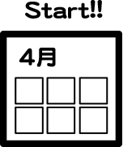
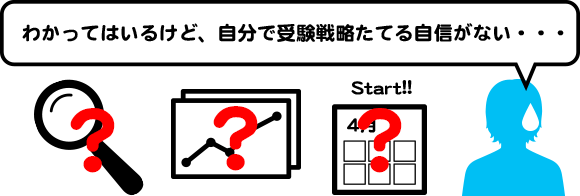
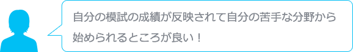
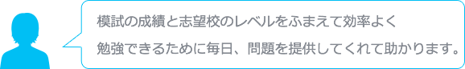
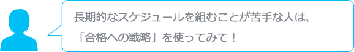
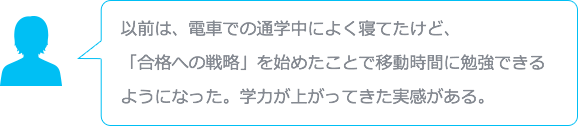

いよいよ高3生になり、「受験勉強を始めないと！」と思い始めているかな？でも、「何から始めたら良いかわからない・・・」そんな悩みを持つキミに、まず準備すべきことを紹介するよ！
1）志望校の情報を集める
まずは、自分が行きたい大学・学部・学科を挙げてみよう。このときに、各大学の特徴や入試方式・日程、入試科目などを一緒に調べると情報が整理できるよ。
2）自分の成績と志望校の入試問題を比較して、必要な学力を確認する
つぎに、模試の結果などで、自分の成績を確認。あわせて、志望校の入試問題をみて、どんな問題が出ているのかも確認しよう。両方を比較することで、志望大合格に必要な学力が見えてくるぞ。
3）受験勉強のスケジュールを立てる

教科ごとの目標が決まったら、受験勉強のスケジュールをたてよう。 この際、長期的(1年)、中期的(3か月程度)、短期的(1週間～1か月)に分けて計画を立てると、見通しが良くなるよ。ニガテな教科や分野から、まずは取り組むように計画しよう。

「志望校は決まったけど、受験戦略をたてる自信がない・・・」と思っていないかな？そんなキミには、志望校対策WEB学習コンテンツ「合格への戦略」が頼れる味方に！
「合格への戦略」でできること
キミだけの受験戦略立案をサポート！
さらに、取り組むべき問題を自動配信してくれる志望校対策の伴走者。

その他の合格への戦略の特徴
☑ 問題数は、約25,000問を準備
☑ 5教科対応（英語のリスニングも対応）
☑ センター試験/個別試験、両方に対応
☑ 解説動画、補足動画も提供
☑ 日々の達成状況、進捗状況が確認できる
☑ 正解率の低い問題を、選択して復習可能
利用者の声




「合格への戦略」を、キミの受験勉強に役立ててね！